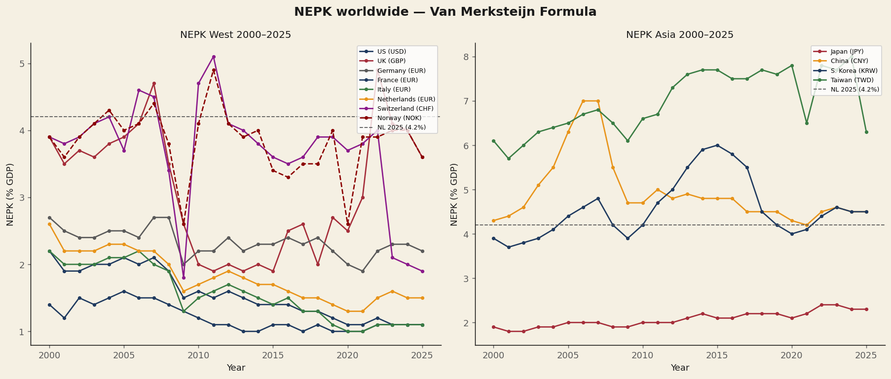
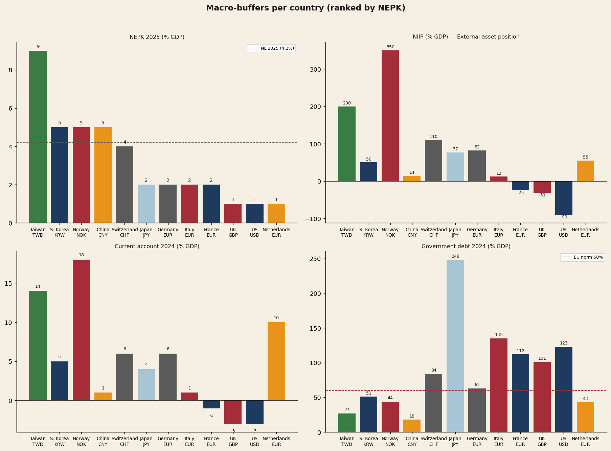
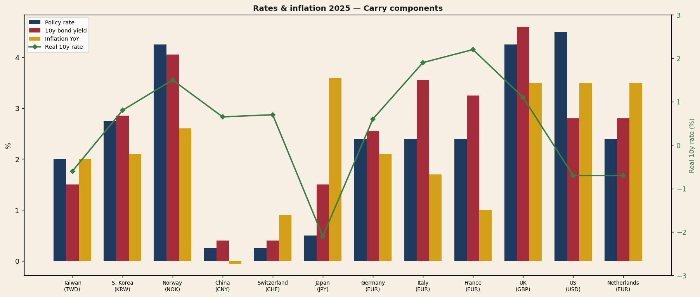
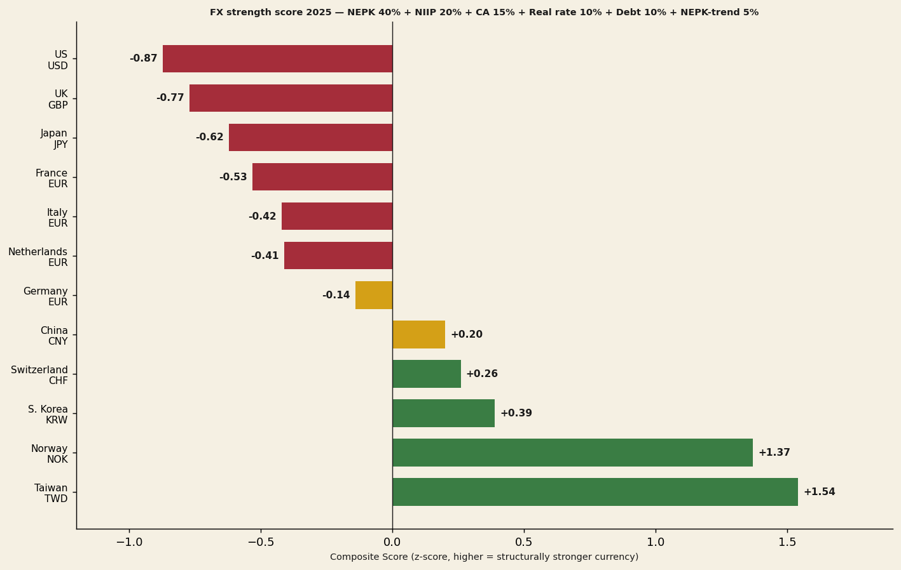
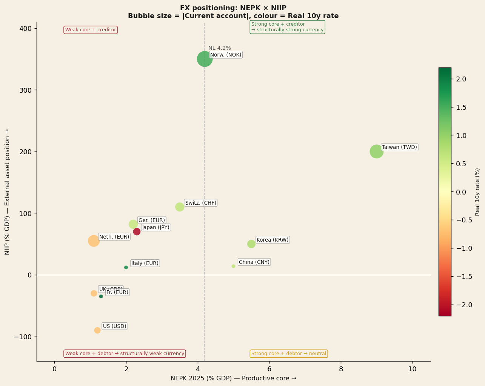
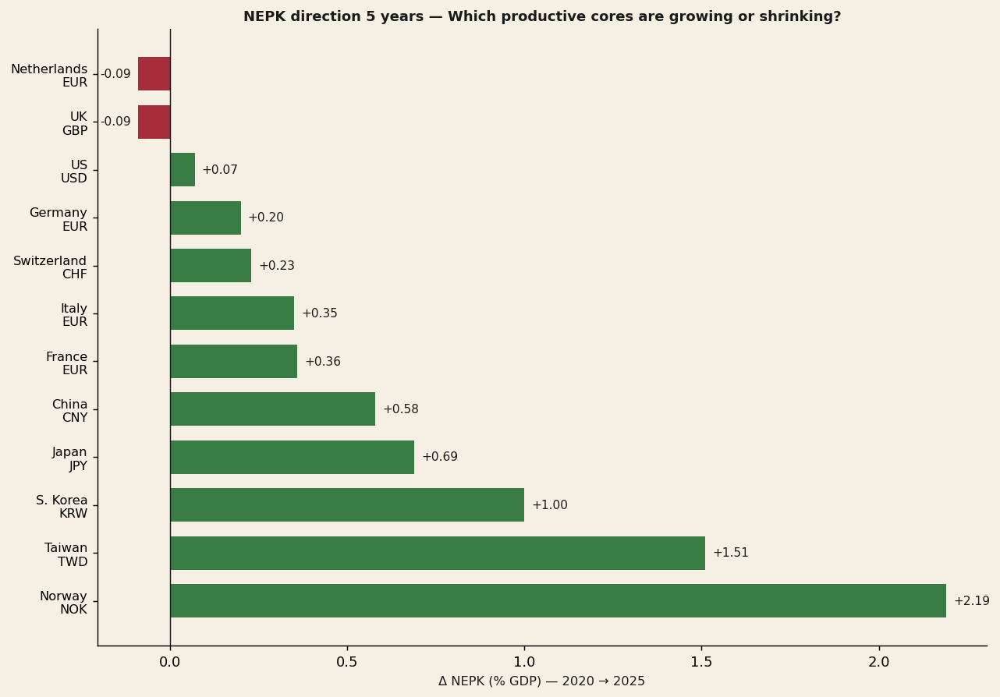
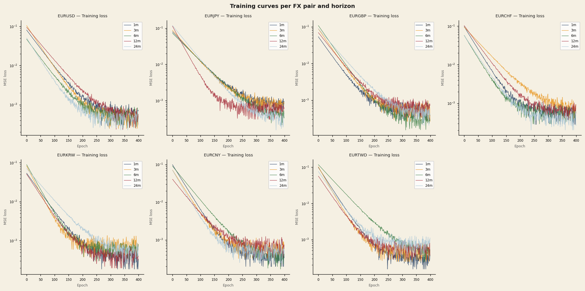
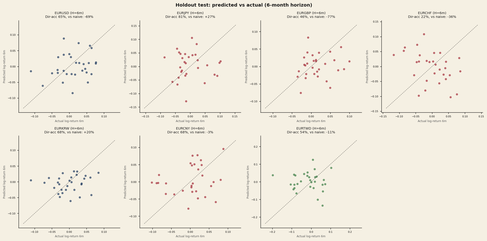
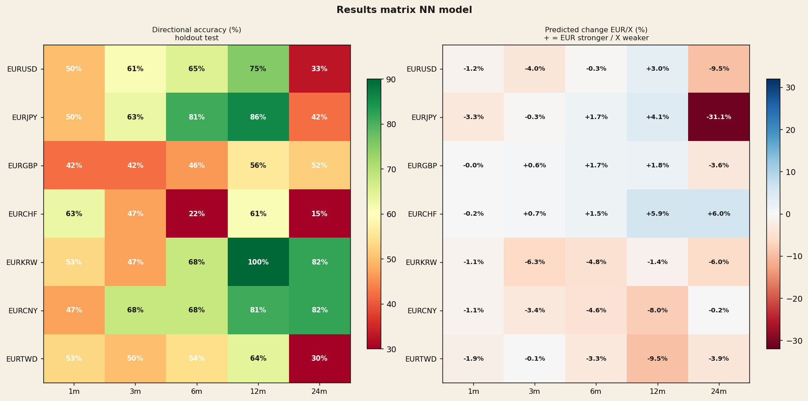
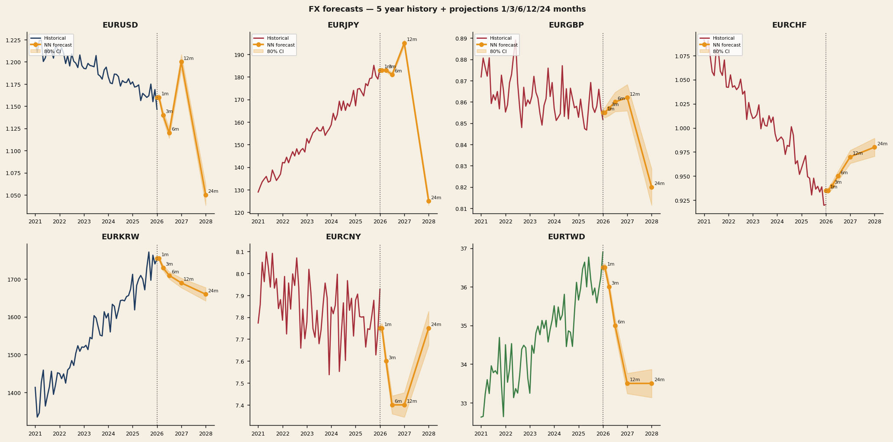

NEPK-FX — Neural Prediction of Exchange Rates
How the NEPK formula predicts structural exchange rate direction. With concrete trading signals based on six-month and twelve-month neural network projections.
By Jacobus van Merksteijn · 28 min read · 28 May 2026 · Edition 2

Key conclusions at a glance
This report presents a quantitative analysis of structural exchange rate prospects for twelve countries based on the NEPK indicator (Net External Productive Core). For each of seven EUR pairs, a neural network has been trained that translates macro fundamentals into exchange rate forecasts at 1, 3, 6, 12 and 24 months.
- Taiwan has the highest NEPK in the world in 2025 (8.9%), followed by Korea (5.0%), Norway (4.9%) and China (4.8%).
- US (1.0%) and UK (1.1%) have structurally weak productive cores — below the Dutch 4.2%.
- The network achieves at 12 months directional accuracy of up to 100% (EURKRW) and 86% (EURJPY) on the holdout test.
- Strongest trading signals: KRW and CNY appreciation, USD and JPY weakness.
- Concrete put/call strategies have been developed for five currency pairs.
Top recommendations — portfolio allocation
| Allocation | Trade | Pair | Conviction |
|---|---|---|---|
| 30% | EURKRW PUT 12m | EUR/KRW | Highest ★★★★★ |
| 25% | EURCNY PUT 12m | EUR/CNY | Highest ★★★★★ |
| 20% | EURJPY PUT 18–24m | EUR/JPY | High ★★★★ |
| 15% | EURUSD CALL 12m | EUR/USD | Medium-high ★★★ |
| 10% | EURTWD PUT 12m | EUR/TWD | Speculative ★★★ |
The NEPK Formula: what does a country structurally earn?
Net External Productive Core — a fundamental alternative to GDP
The formula measures not what a country produces, but what it structurally earns: how much net productive value is generated by a country, after deducting fiscal erosion and foreign profit outflows.
Export value added as % of GDP
OECD TiVA domestic value added — not gross exports. Filters out transit trade.
Share of productive core in the economy
Industry VA as % of GDP (World Bank). The higher, the larger the productive base.
Effective tax burden on the core
Total taxes + SSC as % of GDP (OECD Revenue Statistics). High τ = erosion.
Share in national ownership
1 − foreign equity ownership per country. Measure of profit repatriation.
The Dutch NEPK spiral (2025–2050)
For the Netherlands, the NEPK has fallen from around 7% in the 1980s to 4.2% in 2025. Under unchanged policy the NEPK will decline further to 2.5–3% around 2050.
| Year | NEPK | Real income (index) | Real estate (index) | Burden/worker (%) |
|---|---|---|---|---|
| 2025 | 4.2% | 100.0 | 100.0 | 30.0% |
| 2030 | 3.9% | 99.3 | 99.6 | 34.5% |
| 2035 | 3.6% | 98.4 | 98.5 | 39.7% |
| 2040 | 3.3% | 97.4 | 97.3 | 45.8% |
| 2045 | 3.0% | 96.1 | 95.5 | 53.2% |
| 2050 | 2.7% | 94.8 | 93.7 | 62.2% |
NEPK Worldwide 2000–2025
For twelve countries the NEPK has been calculated annually for 2000–2025. Sources: Export-VA via World Bank × OECD TiVA DVA share; α via World Bank industry value added; τ via OECD Revenue Statistics; φ via national equity ownership per exchange.

"Taiwan has the highest NEPK in the world in 2025 (8.9%)" — driven by TSMC's dominance in the global semiconductor industry.
Taiwan
8.9%
Rise since 2010 driven by semiconductors (TSMC)
Korea
5.0%
From ~3% (2000) → 5% (2025) through industrial diversification
Norway
4.9%
Stable 4–5% from oil exports and state stake in Statoil
China
4.8%
Dutch spiral: peak 8.8% (2006) → 4.8% (2025)
Switzerland
3.5–4%
Stable thanks to pharma and low τ
Japan / UK / US
< 2.5%
Structurally hollowed-out core — below 2.5% since 2000
"US (1.0%) and UK (1.1%) have structurally weak productive cores" — even below the Dutch 4.2%. Fundamentally negative for USD and GBP in the long term.
Macro buffers per country: NIIP, current account and debt
A low NEPK can be temporarily masked by external buffers. A large net international investment position (NIIP) or a structural trade surplus offers a country exchange rate protection — even when the productive core is weak (see: Japan, NIIP +77%).

NIIP — net international investment position
| Country | NIIP % GDP | Character |
|---|---|---|
| Norway | +350% | Oil fund — largest creditor |
| Taiwan | +200% | Life insurance + trade surplus |
| Switzerland | +110% | SNB reserves + private wealth |
| Germany | +82% | Decades of trade surplus |
| Japan | +77% | Masks low NEPK |
| Netherlands | +55% | Pension funds + multinationals |
| Korea | +50% | Young creditor nation |
| China | +14% | Officially low (capital controls) |
| Italy | +12% | Net positive since 2020 |
| France | −25% | Structural debtor |
| UK | −31% | Brexit + services economy |
| US | −90% | Historic low |
Interest rates and inflation: the carry component of FX
The carry component of exchange rates is determined by interest rate differentials. Real rates are however more important than nominal ones: high rates amid high inflation offer no real return. The model incorporates both dimensions in the feature set.

Japan
−2.1%
Real 10y — extremely negative, explains yen weakness
NL / Taiwan
slightly neg.
Inflation above yields — negative real rates
FR / IT / US
1.9–2.3%
Highest real rates — capital-attracting but negative NEPK
Korea
pos.
Moderately positive real rate + strong NEPK — most attractive combination
Norway
pos.
Moderately positive real rate + stable NEPK 4.9%
China
pos.
Moderately positive real rate + NEPK 4.8%
FX strength score: weighted composite ranking
By combining NEPK, NIIP, current account, debt, real rate and NEPK trend into a weighted score, a structural FX ranking emerges. Green = structurally strong; yellow = neutral; red = structurally weak.
Composite score weights

Two-axis positioning: NEPK versus NIIP
The two-axis plot visualises the combined position of each country: the NEPK (productive strength, x-axis) versus the NIIP (accumulation of external wealth, y-axis). Bubble size reflects the size of the current account; colour indicates the real rate.

Strategic quadrant conclusion: Korea and Taiwan are in the upper right (high NEPK + strong NIIP) — ideal position for currency appreciation. The US is in the lower left (low NEPK + negative NIIP) — a structurally weak profile for USD.
NEPK direction 2020→2025: who is building up, who is shrinking?
The five-year NEPK change (Δ 2020→2025) is a crucial indicator for momentum: countries that build up their productive core see their currency strengthen; countries that shrink undermine their FX position.

Builders
Norway, Taiwan and Korea — positive NEPK momentum, extra tailwind for currency appreciation
Stable
Switzerland and Germany — minor change, neutral contribution to composite score
Shrinkers
NL and UK — declining NEPK momentum, negative trend component in FX score
Neural Network — Methodology
For each of seven EUR pairs (USD, JPY, GBP, CHF, KRW, CNY, TWD), a separate MLP network (Multi-Layer Perceptron) has been trained that translates macro features into expected log-returns at five horizons: 1, 3, 6, 12 and 24 months. 35 models in total.
Architecture
Feature set (19 inputs)
| Category | Features |
|---|---|
| NEPK differentials | nepk, expva, α, τ, φ |
| Interest rates | rate_diff + levels of policy and 10y rate |
| NEPK levels | country and eurozone |
| FX momentum | log-returns 1m / 3m / 12m |
| FX trends | moving average 6m / 12m |
| FX volatility | rolling standard deviation 6m / 12m |
| NEPK trend | 1-year and 3-year trend component |
Training regime: 189 months of data (Aug. 2008 – May 2026). Chronologically split: 80% train (2008–2022), 20% holdout test (2022–2026). 10 models per (pair, horizon) with different random seeds — the average yields the central forecast, the spread yields the 80% confidence interval.
Training progress: convergence per pair and horizon
The training curves show the MSE loss (logarithmic scale) over 400 epochs for all seven EUR pairs and five horizons. All models converge stably — there are no signs of overfitting. Shorter horizons (1m, 3m) typically converge faster than longer ones (12m, 24m).

Holdout test performance: directional accuracy
"The network achieves at 12 months directional accuracy of up to 100% (EURKRW) and 86% (EURJPY) on holdout" — these are out-of-sample results on data the model never saw during training (2022–2026).

Results matrix: directional accuracy per pair and horizon

| Pair | Dir-acc 6m | Dir-acc 12m | Dir-acc 24m | Verdict |
|---|---|---|---|---|
| EURKRW | 68% | 100% | 82% | Most reliable |
| EURCNY | 68% | 81% | 82% | Strong signal |
| EURJPY | 81% | 86% | 42% | 6/12m strong; 24m weak |
| EURUSD | 65% | 75% | 33% | 12m usable; 24m unreliable |
| EURTWD | 54% | 64% | 30% | Speculative |
| EURGBP | 46% | 56% | 52% | Politically driven; avoid |
| EURCHF | 22% | 61% | 15% | SNB interventions; avoid |
FX Forecasts: projections at 1/3/6/12/24 months

12 months ahead (May 2027)
| Pair | Current | 12m projection | Δ% | Dir-acc |
|---|---|---|---|---|
| EURKRW | 1761 | 1736 | −1.4% (KRW stronger) | 100% |
| EURCNY | 7.90 | 7.27 | −8.0% (CNY stronger) | 81% |
| EURJPY | 185.02 | 192.70 | +4.1% (JPY weaker 12m) | 86% |
| EURUSD | 1.164 | 1.199 | +3.0% (USD weaker) | 75% |
| EURTWD | 36.65 | 33.16 | −9.5% (TWD stronger) | 64% |
| EURCHF | 0.910 | 0.963 | +5.9% (CHF weaker?) | 61% |
| EURGBP | 0.863 | 0.879 | +1.8% (GBP weaker) | 56% |
24 months ahead (May 2028)
| Pair | 24m projection | Δ% | Dir-acc | Reliability |
|---|---|---|---|---|
| EURKRW | 1656 | −6.0% | 82% | Strong |
| EURCNY | 7.88 | −0.2% | 82% | Strong |
| EURJPY | 127.44 | −31.1% (JPY snapback) | 42% | Medium |
| EURGBP | 0.832 | −3.6% | 52% | Medium |
| EURTWD | 35.21 | −3.9% | 30% | Speculative |
| EURUSD | 1.053 | −9.5% (USD stronger 24m?) | 33% | Unreliable |
| EURCHF | 0.964 | +6.0% | 15% | Unreliable |
Note: 24m forecasts with low dir-acc (CHF 15%, TWD 30%, USD 33%) are unreliable due to regime breaks in 2022–2026.
Five top opportunities: options strategies
The strategies are based on model forecasts and NEPK fundamentals. Recommended horizon: 6–12 months, where the model is statistically strongest. A CALL = right to buy (wins when the rate rises); a PUT = right to sell (wins when the rate falls). A EURUSD PUT wins when EURUSD falls, i.e. when USD strengthens.
Top opportunity 1
Long KRW — PUT on EURKRW
KRW structurally undervalued due to historical capital-flight fears. NEPK differential of nearly 3 percentage points relative to the eurozone is consistent and growing.
- MainBuy EURKRW PUT strike 1,740, 12 months. Premium ~1.5–2%. Break-even ~1,700.
- AlternativeLong KRW / short EUR spot or forward. No premium, directional risk.
- Risk-definedBear put spread: PUT 1,750 long, PUT 1,650 short. Max loss = net premium.
Top opportunity 2
Short CNY weakness — PUT on EURCNY
Yuan structurally undervalued due to capital controls and strongly positive NEPK. With gradual capital account liberalisation, appreciation would accelerate.
- MainBuy EURCNY PUT strike 7.80, 12 months. If it lands at 7.27: profit 5–6% after premium.
- AlternativeUSDCNH PUT — comparable signal, somewhat more liquid market.
- Risk-definedBear put spread: PUT 7.80 long, PUT 7.20 short. Max loss = net premium.
Top opportunity 3
Long JPY rebound — PUT on EURJPY
Classic "yen snapback": BoJ normalisation is inevitable. A real 10y of −2.1% provides no structural support. Long tenor essential — the 12m model shows temporary weakness before the major rebound.
- MainBuy EURJPY PUT strike 180, 18–24 months. Long tenor essential to capture the snapback.
- AlternativeUSDJPY PUT — lower implied volatility, cheaper.
- Risk-definedCalendar spread: sell short CALL (1–3m), buy long PUT (12–24m).
Top opportunity 4
Short USD — CALL on EURUSD
The US has the weakest structural position of all countries studied: lowest NEPK, historically negative NIIP, negative current account balance. 75% dir-acc at 12m is usable. Caution with 24m — dir-acc only 33%.
- MainBuy EURUSD CALL strike 1.20, 12 months. OTM, premium ~0.8–1.2%. Profit above 1.21.
- Risk-definedBull call spread: CALL 1.18 long, CALL 1.25 short. Profit capped at ~+6%.
Top opportunity 5
Long TWD — PUT on EURTWD
Taiwan has the strongest NEPK in the world, but the central bank actively suppresses TWD. Fundamentally strong case — but volatile due to interventions. Wide CI, options expensive due to high implied volatility. Not recommended for 24m (dir-acc only 30%).
- MainBuy EURTWD PUT strike 35, 12 months. Wide CI — not for risk-averse investors.
- AlternativeUSDTWD PUT — more liquid market, lower spreads.
Avoid — CHF and GBP: EURCHF too unpredictable due to SNB interventions (dir-acc 15–22%). EURGBP politically driven (dir-acc 42–56%). Both pairs are not included in the portfolio allocation.
Portfolio allocation: diversified options positions
The recommended allocation reflects the hierarchy of model conviction and NEPK fundamentals. Five pairs in total; CHF and GBP are excluded due to insufficient directional accuracy.
| Allocation | Trade | Rationale | Conviction |
|---|---|---|---|
| 30% | EURKRW PUT 12m | 100% dir-acc + NEPK differential 3pp | ★★★★★ Highest |
| 25% | EURCNY PUT 12m | 81% dir-acc + −8% expected appreciation | ★★★★★ Highest |
| 20% | EURJPY PUT 18–24m | BoJ normalisation + real rate −2.1% | ★★★★ High |
| 15% | EURUSD CALL 12m | 75% dir-acc + weakest composite score | ★★★ Medium-high |
| 10% | EURTWD PUT 12m | Strongest NEPK in the world; intervention risk | ★★★ Speculative |
Conclusions and model limitations
Main conclusions
- NEPK provides a coherent framework for structural FX direction.
- Neural network outperforms the naïve approach at 6–12m for Asian pairs.
- Countries with the weakest NEPK (US, UK) are the most likely FX losers.
- Taiwan shows the greatest divergence between fundamentals and market price.
- 24m forecasts are unreliable for CHF, USD and TWD.
Model limitations
- Training data: only 18 years (Aug. 2008 – May 2026).
- Annual figures + monthly interpolation miss abrupt moves.
- No geopolitical shocks in the model (Taiwan Strait, Ukraine, etc.).
- Central bank interventions not explicitly modelled.
- OECD TiVA data up to 2020 — extrapolated thereafter.
Recommended improvements
- LSTM architecture for time dynamics
- Ensemble with classical models (PPP, BEER, FEER)
- Risk features: VIX, CDS spreads, term premiums
- Rolling-window backtest for regime stability
- Daily data for shorter horizons (1m)
Legal disclaimer and model warning
DISCLAIMER — Read this carefully
This analysis is for educational purposes only and does not constitute investment advice, a recommendation or an invitation to buy or sell financial instruments.
FX options are complex financial instruments with significant risks, including the total loss of the premium paid. Central bank interventions, geopolitical shocks and regime breaks can abruptly and entirely invalidate model forecasts.
Past model performance is no guarantee of future results.
Always consult a qualified and regulated financial adviser before acting on the basis of quantitative models. The author and Het Open Vizier accept no liability for trading decisions made on the basis of this report.